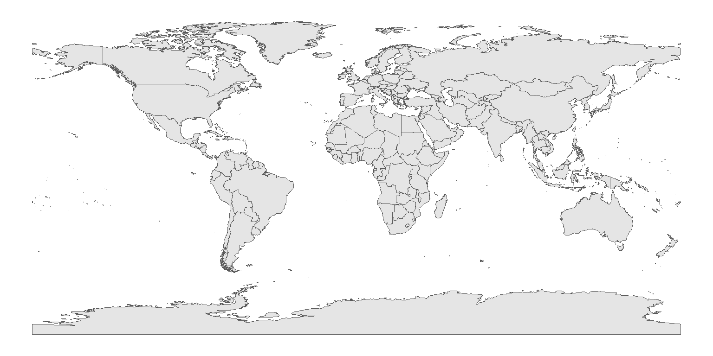

Applied Data Science: Communication and Visualisation - Project 1.3
Author
Amun Stalder
Published
April 29, 2024
Introduction to the Cartography Project
As part of the Applied Data Science: Communication and Visualisation course for the Certificate of Open Studies (COS) of the EPFL, the students show their acquired skills in small data science projects. This markdown file is about the analysis cartography data.
Analysing the data
Task 1: Loading the data and inspecting a first graph
Firstly, we load the data using the {readxl} package. We make an initial data-wrangling in order to bring it in a useful format for plotting. The Excel file is not very clean in the sense of a proper data frame, and therefore some tests are added in order to identify whether what we see in the Excel file is also what we get in the R data frame,
library(dplyr)library(readxl)library(stringr)library(tidyr)library(testthat)# to drop wrong values because of the legend in the exceldrop_list <-c("Special value",":","Available flags:","b","e")df_gap <-read_excel("data/employment_gap.xlsx",sheet =3,skip =9)df_gap_longer <- df_gap %>%select(-starts_with("...")) %>%# dropping useless colsfilter(time !="geo (Labels)") %>%rename(id = time) %>%pivot_longer(cols =starts_with("20"),names_to ="time",values_to ="gap") %>%filter(!(id %in% drop_list)) %>%mutate(gap =as.numeric(gap), # here, the ":" is converted to "NA"gap =round(gap, 2),time =as.numeric(time))# Adding some unit-tests:test_that("Amount of NA in gap should be 59",expect_equal(df_gap_longer %>%filter(is.na(gap)) %>%count() %>%pull(),59))
Test passed 🌈
test_that("Smallest year should be 2005, largest 2018",expect_equal(min(df_gap_longer$time) ==2005,max(df_gap_longer$time) ==2018 ))
Test passed 😸
df_gap_longer <- df_gap_longer %>%filter(!is.na(gap)) # Two contries will be dropped here, hence from 41 to 39test_that("Distinct number of countries should be 38 after removing Albania and LI",expect_equal( df_gap_longer %>%select(id) %>%distinct() %>%count() %>%pull(),39 ))
Test passed 🌈
glimpse(df_gap_longer)
Rows: 515
Columns: 3
$ id <chr> "European Union - 28 countries", "European Union - 28 countries",…
$ time <dbl> 2005, 2006, 2007, 2008, 2009, 2010, 2011, 2012, 2013, 2014, 2015,…
$ gap <dbl> 16.0, 15.7, 15.6, 15.1, 13.5, 13.0, 12.8, 12.2, 11.7, 11.5, 11.6,…
Now let’s develop a graph similar to the one shown on the course website:
library(ggplot2)library(ggtext)library(geomtextpath)library(ggrepel)df_gap_longer_top_12 <- df_gap_longer %>%arrange(time) %>%group_by(id) %>%#identify the last entry (top 12 will be scored by last entry)mutate(rn_last =row_number(),is_last =ifelse(rn_last ==max(rn_last), TRUE, FALSE)) %>%ungroup() %>%arrange(desc(gap)) %>%# find the 12 highest last values in last entriesgroup_by(is_last) %>%mutate(rn =row_number(),is_top_12 =ifelse(is_last ==TRUE& rn %>%between(1, 12), TRUE, FALSE),id = forcats::fct_inorder(id)) %>%select(-rn,-rn_last) %>%ungroup() %>%group_by(id) %>%# Make the whole group true mutate(is_top_12 =any(is_top_12)) %>%ungroup()ggplot(mapping =aes(x = time, y = gap, group = id)) +geom_line(data = df_gap_longer_top_12,color ="grey", alpha =0.5) +geom_line(data = df_gap_longer_top_12 %>%filter(is_top_12),mapping =aes(color = id, y = gap)) +geom_text_repel(data = df_gap_longer_top_12 %>%filter(is_top_12, is_last),aes(label = id, color = id),size =3,box.padding =0.3,point.padding =0.3,segment.size =0.2, force =20) +scale_color_brewer(palette ="Paired") +labs(title="Gender employment gap",subtitle="Annual difference between the employment rates of men and women aged 30-64",x ="Year",y ="Percentage of total population",caption ="Source: Eurostat" ) + hrbrthemes::theme_ipsum() +theme(legend.position ="none")
Task 2: Highlighting France
We now highlight France with blue color
ggplot(mapping =aes(x = time, y = gap, group = id)) +geom_line(data = df_gap_longer_top_12,color ="grey", alpha =0.5) +geom_line(data = df_gap_longer_top_12 %>%filter(id =="France (metropolitan)"),color ="blue") +labs(title="Gender employment ga in France and other EU countries",subtitle="Annual difference between the employment rates of men and women aged 30-64",x ="Year",y ="Percentage of total population",caption ="Source: Eurostat" ) + hrbrthemes::theme_ipsum() +theme(legend.position ="none")
Task 3: Plotting the data on a (cartographyic map
We’ll use the {sf} package for that. Let’s first try to load the map data from naturalearth.

This seems to work well. Now, let’s zoom to Europe:
It seems, that there is some missing data (e.g. Germany). The most likely cause is that there were some mismatches between SOVEREIGNT and id. Let’s check it out:
# A tibble: 8 × 2
id NAME
<chr> <chr>
1 Malta <NA>
2 North Macedonia <NA>
3 Serbia <NA>
4 European Union - 28 countries <NA>
5 Euro area (18 countries) <NA>
6 Euro area (19 countries) <NA>
7 Germany (until 1990 former territory of the FRG) <NA>
8 France (metropolitan) <NA>
When inspecting these values, we have to change some names in the id column. Next, we’ll plot the data again
gap_2018_renamed <- gap_2018 %>%filter(id !="France") %>%# We'll keep the "France (metropolitan)" onemutate( id =case_when( id =="North Macedonia"~"Macedonia", id =="Serbia"~"Republic of Serbia", id =="Germany (until 1990 former territory of the FRG)"~"Germany", id =="France (metropolitan)"~"France",TRUE~ id ))europe_with_gap_data <- world %>%left_join(gap_2018_renamed, join_by(SOVEREIGNT == id))ggplot() +geom_sf(data = europe_with_gap_data,mapping =aes(fill = gap)) +theme_void() +coord_sf(xlim =c(-25, 40),ylim =c(30, 70) ) +theme(legend.title =element_blank()) +labs(title ="Gender employment gap in Europe",subtitle ="Annual difference between the employment rates of men and women agen 20-64",caption ="Source: Eurostat")